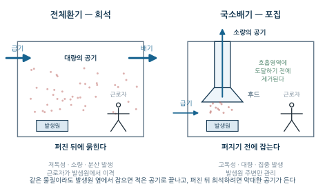
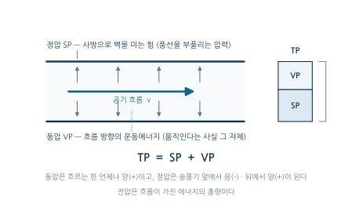
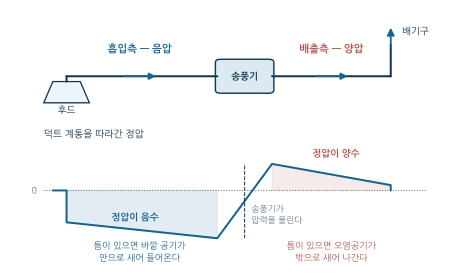
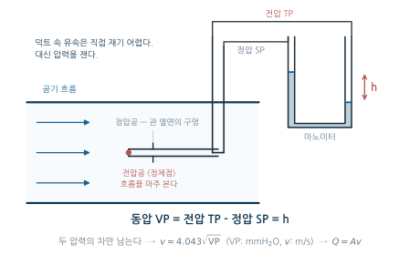
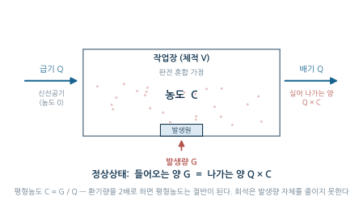
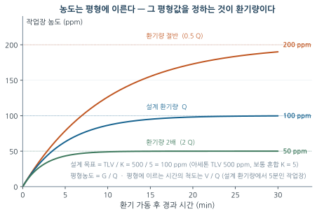

9주차. 산업환기 I — 환기의 원리와 전체환기
환기의 목적과 두 가지 전략, 공기의 성질과 유체역학 기초, 전압=정압+동압, 속도압과 유속, 희석환기의 필요환기량 계산, 전체환기의 적용 조건
학습목표
이 주를 학습한 후 여러분은 다음을 할 수 있어야 합니다:
- 산업환기의 목적을 설명하고, 전체환기와 국소배기환기의 원리적 차이와 각각의 적용 논리를 설명할 수 있다
- 공기의 성질(이상기체 법칙)과 연속방정식·베르누이 정리로 덕트 내 공기 흐름을 설명할 수 있다
- 전압·정압·동압의 관계를 이해하고, 측정한 속도압으로부터 유속과 유량을 계산할 수 있다
- 희석환기의 필요환기량을 목적별(유해물질 희석, 폭발 방지, 열·CO₂·수분 제거)로 계산할 수 있다
- 여러 유해물질을 동시에 취급할 때 필요환기량을 결정하는 원칙을 적용할 수 있다
- 전체환기가 적합한 조건과 그 한계를 설명하고, 국소배기가 필요한 상황을 판별할 수 있다
1. 환기는 무엇을 하는 일인가
1.1 관리 위계 속의 환기
1주차에서 본 관리 위계를 다시 떠올려 보자. 제거·대체가 불가능할 때 다음 순서는 공학적 대책이었고, 그 공학적 대책의 대표가 바로 산업환기(Industrial Ventilation)다. 환기는 유해물질 발생 자체를 없애지는 못하지만, 발생한 유해물질이 근로자의 호흡 영역에 도달하기 전에 제거하거나 희석한다 — 발생원과 사람 사이의 “확산” 고리를 끊는 개입이다.
환기란 실내의 오염된 공기를 실외의 신선한 공기로 교환하거나, 오염된 공기를 직접 포집하여 제거하는 것을 말한다. 산업환기의 목적은 네 가지로 정리된다.
- 유해물질 농도를 노출기준(TLV-TWA) 이하로 유지 (3주차의 노출기준이 곧 설계 목표값이 된다)
- 쾌적한 작업환경 조성 (온도, 습도, 냄새 제어)
- 화재·폭발 위험 예방
- 근로자의 건강 보호와 생산성 향상
1.2 두 가지 전략 — 희석과 포집
산업환기는 크게 두 방식으로 나뉜다. 원리가 다르므로 적용 논리도 다르다.
| 구분 | 전체환기 (General Ventilation) | 국소배기환기 (Local Exhaust Ventilation) |
|---|---|---|
| 원리 | 신선한 공기로 희석 | 발생원에서 직접 포집 |
| 효율 | 낮음 | 높음 |
| 적용 조건 | 저독성, 소량, 분산 발생 | 고독성, 대량, 집중 발생 |
| 초기 비용 | 낮음 | 높음 |
| 운전 비용 | 높음 (대량의 공기 교체) | 낮음 (소량만 배기) |
| 관리 공간 | 작업장 전체 | 발생원 주변 |

그림 10.1 의 두 작업장은 같은 물질을 같은 양만큼 발생시키지만, 처리해야 하는 공기의 양이 전혀 다르다. 이 차이가 표의 “효율·비용” 행을 만들어 내는 실체다.
| 관리 위계 | 환기의 자리 |
|---|---|
| ① 제거·대체 | |
| ② 공학적 대책 | 밀폐·격리 → 국소배기환기(LEV) 우선 → 전체환기 |
| ③ 관리적 대책 | |
| ④ 개인보호구 |
같은 유해물질이라도 발생원 바로 옆에서 포집하면 소량의 공기만 빼내면 되지만, 작업장 전체로 퍼진 뒤에 희석하려면 막대한 양의 공기를 교체해야 한다. 따라서 독성이 높거나 발생량이 많은 경우 국소배기환기를 우선 적용하고, 전체환기는 뒤에서 볼 조건(§4.2)을 만족하는 경우에만 쓴다.
이번 주는 두 방식에 공통되는 유체역학·압력의 언어를 익힌 뒤 전체환기(희석환기)를 다룬다. 국소배기장치의 각론 — 후드·덕트·송풍기·공기정화장치와 압력손실 계산 — 은 10주차에서 다룬다.
2. 공기의 성질과 흐름 — 유체역학 기초
환기 설계는 결국 “공기라는 유체를 원하는 곳으로 원하는 만큼 흐르게 하는 일”이다. 그러려면 공기가 어떻게 행동하는지에 관한 최소한의 물리학이 필요하다.
2.1 이상기체 법칙 — 공기의 부피는 조건에 따라 변한다
온도와 압력 변화에 따른 기체의 거동은 이상기체 법칙으로 설명된다.
\[PV = nRT\]
- \(P\): 절대압력 (Pa, kPa)
- \(V\): 체적 (m³)
- \(n\): 몰수 (mol)
- \(R\): 기체상수 (8.314 J/mol·K)
- \(T\): 절대온도 (K)
표준상태(STP)는 0°C (273.15 K), 1 atm (101.325 kPa, 760 mmHg)이다. 일정한 몰수의 기체에 대해서는 보일–샤를 법칙이 성립한다.
\[\frac{P_1 V_1}{T_1} = \frac{P_2 V_2}{T_2}\]
이 법칙이 환기에서 중요한 이유는, 환기량(부피 유량)이 온도의 함수이기 때문이다. 고온 공정의 배기를 다룰 때나, 뒤에서 볼 필요환기량 식의 상수(몰부피)를 이해할 때 모두 이 관계로 돌아온다.
20°C, 1 atm에서 100 m³의 공기를 80°C로 가열하면 체적은 얼마가 되는가?
압력이 일정하므로 체적은 절대온도에 비례한다.
\[\frac{V_2}{V_1} = \frac{T_2}{T_1} = \frac{353.15}{293.15} = 1.205\] \[V_2 = 100 \times 1.205 = 120.5 \text{ m}^3\]
가열하면 약 20.5% 팽창한다. 같은 질량의 공기라도 온도가 다르면 부피 유량이 달라진다는 점을 기억해 두자.
기체의 비중은 분자량을 공기의 평균 분자량(약 29)으로 나눈 값이다. 이산화탄소는 44/29 ≈ 1.52로 공기보다 무거워 낮은 곳에 고이고, 메탄(16/29 ≈ 0.55)은 위로 모인다. 다만 작업장 공기에 섞인 증기의 거동은 물질 자체의 비중이 아니라 혼합물의 유효비중이 결정한다. 증기 비중 \(S\)인 물질이 부피 분율 \(f\)로 섞여 있으면
\[\text{유효비중} = f \times S + (1 - f) \times 1\]
이다. 증기 비중 2.0인 아세톤이 10,000 ppm(1 %)이면 유효비중은 \(0.01 \times 2.0 + 0.99 \times 1.0 = 1.01\)에 그친다. “무거운 증기는 바닥에 깔린다”는 통념이 성립하려면 폭발 범위에 가까운 고농도여야 하며, 보통의 노출 농도에서는 증기가 공기와 함께 움직인다 — 후드를 아래에 두는 것이 정답이 아닌 이유다.
2.2 연속방정식 — 좁아지면 빨라진다
비압축성 유체가 관을 흐를 때, 어느 단면을 지나는 유량은 일정하다.
\[Q = A_1 v_1 = A_2 v_2 = \text{일정}\]
- \(Q\): 유량 (m³/s)
- \(A\): 단면적 (m²)
- \(v\): 평균 유속 (m/s)
따라서 덕트 단면적이 감소하면 유속은 증가한다.
\[\frac{v_2}{v_1} = \frac{A_1}{A_2} = \frac{D_1^2}{D_2^2}\]
원형 덕트에서는 직경의 제곱이 단면적을 결정하므로, 직경을 절반으로 줄이면 같은 유량에서 유속은 4배가 된다. \(Q = AV\)는 이 과목에서 가장 자주 쓰게 될 식이다 — 유량·단면적·유속 중 둘을 알면 나머지 하나가 나온다.
2.3 레이놀즈 수 — 층류와 난류
유체 흐름이 매끄러운 층류인지 뒤섞이는 난류인지는 무차원수인 레이놀즈 수(Reynolds number)로 판별한다.
\[Re = \frac{\rho v D}{\mu} = \frac{v D}{\nu}\]
- \(\rho\): 밀도 (kg/m³), \(v\): 평균속도 (m/s), \(D\): 관 직경 (m)
- \(\mu\): 점성계수 (Pa·s), \(\nu\): 동점성계수 (m²/s)
| Re 값 | 유동 상태 | 특성 |
|---|---|---|
| Re < 2,100 | 층류 (Laminar) | 규칙적, 평행한 흐름 |
| 2,100 < Re < 4,000 | 천이구간 (Transition) | 불안정 |
| Re > 4,000 | 난류 (Turbulent) | 불규칙적, 혼합 흐름 |
산업환기 덕트는 유속이 빠르고 직경이 커서 대부분 난류 상태로 운전된다. 난류는 마찰손실을 키우지만, 오염물질을 공기와 골고루 섞어 주므로 희석환기의 “완전 혼합” 가정(§4.4)이 성립하는 배경이기도 하다.
2.4 베르누이 정리 — 에너지 보존
유체가 흐르는 관에서 에너지는 보존된다. 높이 차이를 무시할 수 있을 때 (환기 덕트에서는 대개 그렇다) 베르누이 정리는 다음과 같이 쓴다.
\[P + \frac{1}{2}\rho v^2 = \text{일정}\]
첫 항은 압력 에너지, 둘째 항은 운동 에너지다. 이 식이 말하는 바는 단순하다 — 흐름이 빨라지면 그만큼 압력이 낮아지고, 흐름이 느려지면 압력이 회복된다. 산업환기는 이 정리를 자신의 언어로 번역해 쓰는데, 그것이 다음 절의 압력 개념이다.
3. 압력 — 전압, 정압, 동압
3.1 세 가지 압력
베르누이 정리를 환기의 언어로 다시 쓰면 다음과 같다.
\[\text{TP} = \text{SP} + \text{VP}\]
| 용어 | 명칭 | 정의 | 특성 |
|---|---|---|---|
| TP | 전압 (Total Pressure) | 유체가 가진 총 에너지 | SP와 VP의 합 |
| SP | 정압 (Static Pressure) | 벽면에 수직으로 작용하는 압력 | 양(+) 또는 음(−) |
| VP | 동압 (Velocity Pressure) | 유체의 운동에너지에 해당하는 압력 | 항상 양(+) |
세 압력의 성격을 정확히 구분해 두자.
- 정압(SP)은 공기를 사방에서 밀거나(양압) 빨아들이는(음압) 잠재 에너지다. 풍선을 부풀리는 압력이 양의 정압, 빨대 속의 압력이 음의 정압이다. 송풍기의 배기 쪽 덕트는 양압, 흡입 쪽 덕트는 음압이 된다.
- 동압(VP)은 공기가 움직이고 있다는 사실 그 자체의 에너지다. 공기가 흐르는 한 언제나 양수이며, 유속이 0이면 0이다.
- 전압(TP)은 둘의 합으로, 흐름이 가진 전체 에너지다.

부호는 송풍기를 기준으로 갈린다. 송풍기가 공기를 끌어당기는 흡입측은 정압이 음(−)이고, 밀어내는 배출측은 양(+)이다. 동압은 어느 쪽에서나 양이다.

이 부호는 실무에서 곧바로 쓰인다. 송풍기 앞쪽 덕트에 틈이 생기면 바깥 공기가 안으로 새어 들어와 후드의 배풍량이 줄고, 뒤쪽에 틈이 생기면 오염공기가 밖으로 새어 나간다. 같은 “누설”이라도 결과가 반대인 것이다 (10주차의 정압 진단이 이 성질 위에 서 있다).
3.2 동압과 유속의 관계
동압은 운동에너지이므로 유속의 제곱에 비례한다.
\[\text{VP} = \frac{1}{2}\rho v^2 \approx 0.6\, v^2 \quad (\text{Pa, 표준공기 } \rho = 1.2 \text{ kg/m}^3)\]
산업환기 실무에서는 압력 단위로 mmH₂O(수주 밀리미터)를 널리 쓴다. 공기의 비중량 \(\gamma\) (표준공기 1.2 kgf/m³)와 중력가속도 \(g\)를 쓰면:
\[\text{VP (mmH}_2\text{O)} = \frac{\gamma\, v^2}{2g} = \frac{1.2\, v^2}{2 \times 9.81} \approx \frac{v^2}{16}\]
이 식을 유속에 대해 풀면, 산업환기에서 가장 많이 쓰는 관계식 하나가 나온다.
\[v = \sqrt{\frac{2g\,\text{VP}}{\gamma}} = \sqrt{16.35\,\text{VP}} \approx 4.043\sqrt{\text{VP}} \quad (\text{VP: mmH}_2\text{O},\ v: \text{m/s})\]
덕트 속을 흐르는 공기의 유속을 직접 재는 것은 어렵지만, 압력은 쉽게 잴 수 있다. 피토관(Pitot tube)을 덕트에 꽂으면 정체점에서 전압(TP)이, 벽면에 수직으로 뚫은 구멍에서 정압(SP)이 측정되고, 그 차이가 동압이다: \(\text{VP} = \text{TP} - \text{SP}\). 여기에 \(v = 4.043\sqrt{\text{VP}}\)를 적용하면 유속이, \(Q = Av\)를 적용하면 유량이 나온다.
압력 측정 → 동압 → 유속 → 유량. 환기 시스템의 성능 진단은 이 네 단계의 사슬로 이루어진다.

그림 10.4 에서 마노미터 액주의 높이 차 \(h\)가 바로 동압이다. 전압공은 흐름을 정면으로 마주 보아 정체점의 압력(TP)을 받고, 관 옆면의 정압공은 흐름과 나란하여 정압(SP)만을 받는다. 두 압력을 마노미터의 양쪽에 걸면 공통 성분인 정압이 상쇄되고 차이인 동압만 남는 구조다.
무엇: (a) 덕트 측정공에 삽입된 피토관과 경사 마노미터(또는 디지털 미압계)가 연결된 현장 사진, (b) 후드 개구면에서 제어풍속을 재는 열선풍속계 사진. 두 계기가 어디에 쓰이는지가 한눈에 보이는 구도가 좋다.
왜: 학생들이 가장 많이 혼동하는 것이 “피토관은 덕트 내부의 속도압, 열선풍속계는 후드 앞의 제어풍속”이라는 역할 구분이다. 모식도만으로는 계기의 실제 크기와 설치 방식이 전해지지 않는다.
출처 후보: NIOSH/CDC(퍼블릭 도메인), OSHA Technical Manual, 한국산업안전보건공단 KOSHA GUIDE 도해, 위키미디어 커먼즈(“Pitot tube”, “Thermal anemometer”).
대안: 확보가 어려우면 그림 10.4 에 측정공 위치(덕트 직경의 4~6배 하류, 10주차 §7.2)를 표시한 계통도를 덧붙인다.
직경 30 cm인 원형 덕트에서 피토관으로 측정한 동압이 24.5 mmH₂O였다. (공기 비중량 1.2 kgf/m³)
- 덕트 내 평균 유속은?
- 이 덕트의 유량(m³/min)은?
(1) 유속:
\[v = \sqrt{\frac{2 \times 9.81 \times 24.5}{1.2}} = 4.043\sqrt{24.5} \approx 20.0 \text{ m/s}\]
(2) 유량: 단면적 \(A = \pi r^2 = 3.14 \times 0.15^2 = 0.071 \text{ m}^2\)
\[Q = A v = 0.071 \times 20.0 = 1.41 \text{ m}^3/\text{s} = 1.41 \times 60 \approx 85 \text{ m}^3/\text{min}\]
동압이 4배가 되면 유속은 2배가 된다는 점(제곱근 관계)도 함께 확인해 두자.
유속 \(v\)와 동압 VP는 제곱 관계로 묶여 있다. 따라서 “유속을 25% 올리면 동압은 25% 오른다”는 생각은 틀렸다 — 동압은 \(1.25^2 \approx 1.56\)배, 즉 56% 증가한다. 압력을 다루는 계산에서 어느 양이 1승이고 어느 양이 2승인지 놓치면 결과가 크게 어긋난다. 이 감각은 10주차의 압력손실 계산에서 더욱 중요해진다.
4. 희석환기(전체환기)의 원리와 필요환기량
4.1 원리 — 오염을 없애는 것이 아니라 묽히는 것
전체환기는 작업장 전체에 신선한 공기를 공급하여 유해물질을 희석(dilution)하는 방식이다. 그래서 희석환기라고도 부른다.

핵심을 정확히 하자. 희석환기는 발생량을 줄이지 못한다. 정상상태에서는 발생하는 유해물질의 양과 배기로 실려 나가는 양이 같아지는 농도에서 평형이 이루어지며, 환기량을 늘릴수록 그 평형 농도가 낮아질 뿐이다. 따라서 설계의 질문은 언제나 같다 — “평형 농도를 노출기준 아래로 유지하려면 공기를 얼마나 갈아 주어야 하는가?”
4.2 전체환기의 적용 조건
전체환기는 다음 조건을 모두 만족할 때 적용할 수 있다.
- 독성이 낮을 것 — TLV가 충분히 높은 물질 (대략 500 ppm 이상). 고독성 물질에는 부적합
- 발생량이 균일하고 적을 것 — 간헐적 대량 발생에는 부적합
- 발생원이 분산되어 있을 것 — 집중 발생원에는 국소배기가 필요
- 근로자가 발생원에서 충분히 이격되어 있을 것
희석환기가 보장하는 것은 작업장 전체의 평균 농도뿐이다. 발생원에서 직접 제거하지 못하므로, 발생원 근처의 국소 농도는 평균보다 훨씬 높을 수 있고, 그 자리에 근로자가 있다면 고농도에 노출된다. 적용 조건 4번(이격)이 붙는 이유가 이것이다. 독성이 높거나 발생량이 많은 경우 반드시 국소배기환기를 적용해야 한다.
4.3 유해물질 희석에 필요한 환기량
유기용제를 사용하는 작업장의 필요환기량은 물질수지로부터 유도된 다음 식으로 계산한다.
\[Q = \frac{24.1 \times S \times G \times K \times 10^6}{M \times \text{TLV}}\]
- \(Q\): 필요환기량 (m³/min)
- \(S\): 용제의 비중 (specific gravity)
- \(G\): 액체 용제의 사용량 (L/min)
- \(K\): 안전계수 (3~10, 일반적으로 5)
- \(M\): 용제의 분자량 (g/mol)
- TLV: 노출기준 (ppm)
\(G\) 가 액체 부피로 주어지므로, 증기의 몰수를 구하려면 먼저 질량으로 바꿔야 한다 — 그 다리가 비중이다. \(S\) 를 빠뜨리면 \(S = 1\) 로 가정한 셈이 되어, 비중이 0.8 안팎인 대부분의 유기용제에서 필요환기량이 20~25 % 과대하게 나온다.
문제가 증기 발생량(m³/min)을 직접 주면 이 변환이 이미 끝난 것이므로 \(S\) 도 24.1 도 쓰지 않는다. 주어진 것이 액체인지 증기인지를 먼저 확인하는 습관을 들이자.
식의 구조를 읽어 보자. 분자는 “액체 용제 \(G\)가 증발하여 만들어 내는 증기의 부피”다 — 액체 1 L가 증발하면 \(\frac{1000\,\text{(g)} \times 24.1\,\text{(L/mol)}}{M\,\text{(g/mol)}}\) L의 증기가 되는데, 24.1은 기체 1몰이 차지하는 부피(L)로, 21 ℃·1기압 기준값이다 (표준상태 0°C에서 22.4 L, 온도가 오르면 팽창한다 — §2.1의 보일–샤를 법칙). 온도 기준이 다르면 이 값도 달라진다 — 25 ℃에서는 24.45 L/mol이며, 2주차의 ppm↔︎mg/m³ 환산에서 쓴 값이 그것이다. 문제가 어느 온도를 주는지 보고 상수를 고르면 된다. 분모의 TLV(ppm = 10⁻⁶)는 “공기 1 m³가 기준 이내에서 실어낼 수 있는 증기량”을 정한다. 즉 이 식도 뒤에 나올 모든 환기량 식과 같은 구조다:
\[Q = \frac{\text{제거해야 할 발생량}}{\text{공기 단위부피가 실어낼 수 있는 양}} \times \text{안전계수}\]
안전계수 \(K\)는 혼합이 이상적이지 않다는 현실의 보정이다.
| 혼합 상태 | \(K\) |
|---|---|
| 양호한 혼합 | 3 |
| 보통 혼합 | 5 |
| 불량한 혼합 | 10 |
급기구와 배기구의 배치가 나빠 공기가 지름길로 빠져나가거나(단락), 정체 구역이 생길수록 \(K\)를 크게 잡아야 한다.
작업장에서 톨루엔(C₇H₈, 분자량 92, 비중 0.87, TLV 50 ppm)을 1 L/hr의 속도로 사용한다. 안전계수 \(K = 5\)일 때 필요한 환기량은?
- \(G = 1 \text{ L/hr} = 1/60 \text{ L/min} = 0.0167 \text{ L/min}\) (액체)
- \(S = 0.87\), \(M = 92\), TLV = 50 ppm, \(K = 5\)
\[Q = \frac{24.1 \times 0.87 \times 0.0167 \times 5 \times 10^6}{92 \times 50} = \frac{1{,}750{,}745}{4{,}600} \approx 381 \text{ m}^3/\text{min}\]
비중을 빠뜨리면 437 m³/min 이 나온다 — 15 % 가까이 과대평가다. 용제 사용량이 시간당 겨우 1 L인데도 상당한 환기량이 나온다 — TLV가 낮은(독성이 높은) 물질일수록 분모가 작아져 필요환기량이 급격히 커지고, 어느 수준을 넘으면 희석환기는 경제적으로 성립하지 않는다. 적용 조건 1번(저독성)의 정량적 근거가 바로 이것이다.
4.4 시간에 따른 농도 변화
환기를 가동하면 농도는 즉시 목표값이 되는 것이 아니라 지수적으로 감소한다. 작업장 공기가 완전 혼합된다고 가정하면:
\[C = C_0\, e^{-Rt/K}\]
- \(C\): 시간 \(t\) 후의 농도, \(C_0\): 초기 농도
- \(R\): 환기율 \(= Q/V\) (1/s) — \(Q\): 환기량 (m³/s), \(V\): 실내 체적 (m³)
- \(K\): 안전계수 (3~10)
환기율 \(R\)의 역수 \(V/Q\)는 “실내 공기 전체를 한 번 갈아 주는 데 걸리는 시간”이다. 같은 환기량이라도 방이 크면 농도는 천천히 떨어진다. 안전계수 \(K\)가 지수에 들어 있는 것은, 실제 작업장의 혼합이 완전하지 않아 이론보다 감쇠가 느리다는 사실의 보정이다.
반대로 오염물질이 계속 발생하는 상태에서 환기를 가동하면, 농도는 0으로 가는 것이 아니라 §4.1의 평형농도 \(G/Q\)를 향해 지수적으로 올라가 그 값에서 멈춘다. 평형에 이르는 속도의 척도도 같은 \(V/Q\)다.

그림 10.6 의 세 곡선은 발생량이 같고 환기량만 다른 경우다. 환기량을 2배로 하면 평형농도는 절반이 되고, 평형에 도달하는 시간도 절반으로 줄어든다. 설계 환기량에서의 평형농도 100 ppm은 아세톤 TLV 500 ppm의 1/5로, 안전계수 \(K = 5\)가 만들어 낸 여유다 — 계산식의 \(K\)가 그림에서는 평형농도와 노출기준 사이의 거리로 나타난다.
4.5 환기횟수 (ACH)
환기 성능을 직관적으로 나타내는 지표가 환기횟수(Air Changes per Hour)다.
\[\text{환기횟수 (회/hr)} = \frac{\text{환기량 (m}^3\text{/hr)}}{\text{실내 용적 (m}^3\text{)}}\]
“시간당 실내 공기를 몇 번 통째로 갈아 주는가”라는 뜻이다.
| 장소 | 권장 환기횟수 (회/hr) |
|---|---|
| 일반 사무실 | 6~10 |
| 공장(일반) | 10~20 |
| 유해물질 취급 공장 | 20~30 |
| 용접작업장 | 30~60 |
| 도장실 | 50~100 |
오염 발생 강도가 큰 공간일수록 권장 환기횟수가 커지는 구조를 확인하자. 다만 환기횟수는 어디까지나 평균적 지표다 — 같은 20회/hr라도 기류 배치에 따라 실제 희석 성능은 크게 다르다.
4.6 폭발 방지를 위한 환기
가연성 가스·증기가 존재하는 작업장에서는 농도를 폭발하한계(LEL, Lower Explosive Limit) 보다 충분히 낮게 유지해야 한다.
\[Q = \frac{G \times K}{\text{LEL} \times B}\]
- \(G\): 가연성 물질 발생량, \(K\): 안전계수
- LEL: 폭발하한계 (vol%)
- \(B\): 안전계수 (보통 0.25 — LEL의 25% 이하로 유지)
NFPA(미국방화협회)는 가연성 증기 농도를 LEL의 25% 이하로 유지할 것을 권장한다. 측정 오차와 공간 내 농도 편차(평균은 낮아도 어느 구석은 높을 수 있다)를 고려한 안전여유다. 건강 보호 목적의 환기(TLV 기준, ppm 수준)와 폭발 방지 목적의 환기(LEL 기준, vol% 수준)는 목표 농도의 자릿수가 다르다 — 대개 TLV가 LEL보다 훨씬 낮으므로, 근로자가 상주하는 공간에서는 건강 기준 환기량이 폭발 방지 환기량보다 크다.
4.7 여러 유해물질이 동시에 존재할 때
작업장에서 둘 이상의 유해물질을 취급하면, 물질별 필요환기량을 각각 구한 뒤 유해작용의 성격에 따라 최종 환기량을 정한다.
| 유해작용의 성격 | 필요환기량 |
|---|---|
| 유해작용이 서로 다르고 독립적으로 작용 | 각 물질 계산값 중 가장 큰 값 |
| 유해작용이 같아 상가(相加)효과가 있다고 판단 | 각 물질 계산값의 합 |
유해작용이 서로 다르고 독립적인 물질 3종의 필요환기량이 각각 120, 150, 200 m³/min으로 계산되었다면, 이 작업장의 필요환기량은 세 값을 더한 470이 아니라 200 m³/min이다. 가장 까다로운 물질을 만족시키는 환기량이 흐르면, 같은 공기가 나머지 물질도 함께 실어내어 자동으로 기준 이하가 되기 때문이다 — 환기량은 물질별로 따로 흐르는 것이 아니다.
반대로 접착제 공정의 MEK와 톨루엔처럼 둘 다 마취작용을 나타내어 상가효과가 있다고 판단되는 경우에는 사정이 다르다. 각 물질이 기준의 절반씩만 있어도 신체에는 기준치 하나만큼의 부담이 걸리므로, 물질별 환기량을 모두 더해야 한다. 이 구분은 3주차에서 본 혼합물 노출기준의 논리와 정확히 같은 것이다.
5. 열·CO₂·수분을 배출하는 전체환기 · 전체환기 설계의 원칙
5.1 열·CO₂·수분을 배출하는 전체환기
전체환기의 목적이 유해물질 희석만은 아니다. 열, 이산화탄소, 수분을 제거하기 위한 환기량은 각각 별도의 식으로 계산하지만, 세 식 모두
\[Q = \frac{\text{제거해야 할 발생량}}{\text{공기 1 m}^3\text{가 실어낼 수 있는 양}}\]
이라는 같은 구조를 갖는다. 분모가 “실내와 외기의 차이”로 표현된다는 점도 공통이다 — 들어오는 공기와 나가는 공기의 차이만큼만 실어낼 수 있기 때문이다.
열부하 제거 환기량
작업장 내부에서 발생한 열을 배기로 실어내는 데 필요한 환기량:
\[Q\ (\text{m}^3/\text{hr}) = \frac{H_s}{0.3 \times \Delta t}\]
- \(H_s\): 작업장 내 열부하량 (kcal/hr)
- \(\Delta t\): 실내온도 − 외기온도 (℃)
- 0.3: 공기의 체적당 열용량 환산상수 (kcal/m³·℃) — 공기 1 m³는 1℃ 데워지며 약 0.3 kcal을 흡수한다
분모의 \(\Delta t\)가 말해 주는 것: 외기가 시원할수록(온도차가 클수록) 같은 열을 적은 공기로 실어낼 수 있고, 한여름처럼 외기온도가 실내에 가까워지면 필요환기량은 급격히 커진다.
열부하량이 10,000 kcal/hr이고 실내 35℃, 외기 20℃인 작업장의 필요환기량은?
\[Q = \frac{10{,}000}{0.3 \times (35 - 20)} = \frac{10{,}000}{4.5} \approx 2{,}222\ \text{m}^3/\text{hr}\]
단위에 주의: 이 식이 내놓는 값의 단위는 m³/hr이다. m³/min으로 표현하려면 60으로 나눈다 (약 37 m³/min). 환기량 식마다 관행적 단위가 다르므로(희석환기 식은 m³/min, 열·CO₂·수분 식은 m³/hr), 계산 결과를 쓰기 전에 항상 단위를 명시하는 습관을 들이자.
이산화탄소 기준 환기량
재실자의 호흡으로 발생하는 CO₂를 기준 농도 이하로 유지하기 위한 환기량:
\[Q\ (\text{m}^3/\text{hr}) = \frac{M}{C_s - C_o} \times 100\]
- \(M\): CO₂ 발생량 (m³/hr)
- \(C_s\): 실내 CO₂ 기준농도 (%)
- \(C_o\): 외기(급기) 중 CO₂ 농도 (%)
분모의 농도를 %로 넣기 때문에 \(\times 100\)이 붙는다 — %는 “100분의 몇”이므로, 부피비로 환산하려면 100으로 나누어야 하고 그것이 분자로 올라와 100을 곱하는 꼴이 된 것이다. 외기 자체에 CO₂가 있으므로(\(C_o\)) 실어낼 수 있는 것은 그 차이뿐이라는 구조도 다시 확인하자.
실내 CO₂ 기준농도가 0.3%, 외기 CO₂ 농도가 0.03%이고 1인당 CO₂ 배출량이 시간당 21 L일 때, 1인 1시간당 필요환기량은?
- \(M = 21\ \text{L/hr} = 0.021\ \text{m}^3/\text{hr}\)
- \(C_s - C_o = 0.3 - 0.03 = 0.27\ \%\)
\[Q = \frac{0.021}{0.27} \times 100 = 7.8\ \text{m}^3/\text{hr}\cdot\text{인}\]
사람 수에 비례해 늘려 주면 재실 인원 기준의 최소 환기량이 된다.
수분 제거 환기량
실내에서 발생하는 수증기를 제거하기 위한 환기량은 중량 절대습도의 차를 이용해 계산한다.
\[Q\ (\text{m}^3/\text{hr}) = \frac{W}{\gamma \times \Delta x}\]
- \(W\): 시간당 수증기 발생량 (kg/hr)
- \(\gamma\): 공기의 비중량 (kgf/m³, 표준공기 1.2)
- \(\Delta x\): 실내와 외부의 중량 절대습도 차 (kg/kg)
분모 \(\gamma \Delta x\)는 “공기 1 m³가 안팎의 습도 차만큼 추가로 품고 나갈 수 있는 수증기량(kg)”이다.
실내의 중량 절대습도가 0.8, 외부가 0.6이고 실내 수증기가 시간당 3 kg 발생할 때 필요환기량은? (공기 비중량 1.2 kgf/m³)
- \(\Delta x = 0.8 - 0.6 = 0.2\ \text{kg/kg}\)
\[Q = \frac{3}{1.2 \times 0.2} = 12.5\ \text{m}^3/\text{hr} \approx 0.21\ \text{m}^3/\text{min}\]
12.5(m³/hr)와 0.21(m³/min)은 같은 답의 다른 표현이다. 결과를 보고할 때는 반드시 단위를 함께 적는다.
5.2 전체환기 설계의 원칙
이 주의 내용을 설계자의 관점에서 정리하면 다음과 같다.
- 적용 조건을 먼저 판정한다 (§4.2) — 저독성·소량·분산 발생·근로자 이격의 네 조건 중 하나라도 어긋나면 전체환기가 아니라 국소배기를 검토한다.
- 목적별로 환기량을 계산한다 — 유해물질 희석(§4.3), 폭발 방지(§4.6), 열·CO₂·수분(§5.1). 모든 식은 “발생량 ÷ 공기 단위부피의 운반능력”이라는 같은 구조다.
- 혼합의 질을 안전계수에 반영한다 (표 10.5) — 급기·배기 배치가 나쁠수록 \(K\)를 크게 잡는다. 계산된 환기량은 완전 혼합 가정 위의 값이며, 실제 성능은 기류 배치가 좌우한다.
- 여러 물질은 유해작용의 성격으로 판단한다 (표 10.7) — 독립 작용이면 최대값, 상가효과면 합.
- 실내압의 방향을 설계한다 — 오염이 높은 작업장은 배기를 급기보다 우세하게 하여 음압(−)으로 유지한다. 오염물질이 인접한 청정구역으로 새어 나가지 못하게 하기 위해서다(반대로 청정실은 양압으로 유지한다).
- 환기횟수로 상식적 검증을 한다 (표 10.6) — 계산 결과가 장소별 권장 범위와 크게 어긋나면 어딘가 잘못되었을 가능성이 크다.
전체환기가 감당하지 못하는 상황 — 고독성, 대량, 집중 발생 — 에서는 발생원에서 직접 포집하는 국소배기장치가 필요하다. 후드는 얼마나 빨아들여야 하고(제어풍속과 배풍량), 덕트는 얼마나 빠르게 실어 날라야 하며(반송속도), 그 흐름을 만드는 데 필요한 압력과 동력은 얼마인가(압력손실과 송풍기)? 이 질문들이 10주차의 주제이며, 그 모든 계산의 밑바탕이 이번 주에 익힌 \(\text{TP} = \text{SP} + \text{VP}\)와 \(Q = Av\), 그리고 \(v = 4.043\sqrt{\text{VP}}\)다.
요약
| 개념 | 핵심 내용 |
|---|---|
| 환기의 두 전략 | 전체환기(희석: 저독성·소량·분산) vs 국소배기(포집: 고독성·대량·집중). 발생원에 가까울수록 제어 효율이 높다 |
| 이상기체 법칙 | \(PV = nRT\). 기체 부피는 절대온도에 비례 — 몰부피 22.4 L(0℃) → 약 24.1 L(상온) |
| 연속방정식 | \(Q = Av\) = 일정. 단면적이 줄면 유속 증가 (직경의 제곱에 반비례) |
| 레이놀즈 수 | Re < 2,100 층류, Re > 4,000 난류. 환기 덕트는 대부분 난류 |
| 압력의 분해 | \(\text{TP} = \text{SP} + \text{VP}\). 정압은 ±, 동압은 항상 + |
| 동압과 유속 | \(\text{VP} = \gamma v^2 / 2g \approx v^2/16\) (mmH₂O), \(v = 4.043\sqrt{\text{VP}}\). 피토관: VP = TP − SP |
| 희석환기량 | \(Q = \dfrac{24.1\, S\, G\, K \times 10^6}{M \times \text{TLV}}\) (m³/min). \(S\): 비중(액체 → 질량 변환), \(K\): 3~10 |
| 농도 감쇠 | \(C = C_0 e^{-Rt/K}\), \(R = Q/V\) (완전 혼합 가정) |
| 환기횟수 | 환기량(m³/hr) ÷ 실내 용적(m³). 사무실 6~10, 도장실 50~100회/hr |
| 폭발 방지 | 가연성 증기는 LEL의 25% 이하로 유지 (\(B = 0.25\)) |
| 목적별 환기량 | 열: \(H_s/(0.3\Delta t)\) · CO₂: \(M/(C_s - C_o) \times 100\) · 수분: \(W/(\gamma \Delta x)\) — 모두 m³/hr |
| 혼합 노출 | 독립 작용 → 최대값 채택 / 상가효과 → 합산 |
| 실내압 | 오염 작업장은 음압, 청정구역은 양압으로 유지 |
연습문제
문제 1. 희석환기량과 환기횟수
체적 500 m³인 작업장에서 아세톤(분자량 58, TLV 500 ppm)을 시간당 1.5 L 사용한다. 급기·배기 배치가 좋지 않아 안전계수는 \(K = 6\)으로 잡는다.
- 필요환기량(m³/min)을 구하라.
- 이때의 환기횟수(회/hr)를 구하고, 일반 공장의 권장 범위(표 10.6)와 비교하라.
정답 및 해설
(1) \(G = 1.5/60 = 0.025\) L/min
\[Q = \frac{24.1 \times 0.79 \times 0.025 \times 6 \times 10^6}{58 \times 500} = \frac{2{,}855{,}850}{29{,}000} \approx 98.5\ \text{m}^3/\text{min}\]
(2) 환기횟수 \(= \dfrac{125 \times 60}{500} = 15\) 회/hr.
일반 공장의 권장 범위(10~20회/hr) 안에 있다. 아세톤은 TLV가 500 ppm으로 높은(상대적으로 독성이 낮은) 물질이어서 현실적인 환기량으로 희석이 가능하다 — 전체환기의 적용 조건 1번이 성립하는 사례다.문제 2. 속도압, 유속, 연속방정식
직경 20 cm인 원형 덕트에서 피토관으로 전압 −20.5 mmH₂O, 정압 −33.0 mmH₂O가 측정되었다. (공기 비중량 1.2 kgf/m³)
- 이 지점의 동압과 유속을 구하라.
- 이 덕트의 유량(m³/min)을 구하라.
- 하류에서 덕트 단면적이 절반으로 줄어든다면, 그 지점의 유속과 동압은 각각 몇 배가 되는가?
정답 및 해설
(1) 동압 \(\text{VP} = \text{TP} - \text{SP} = (-20.5) - (-33.0) = 12.5\) mmH₂O. (흡입측 덕트라 전압·정압이 모두 음수이지만 동압은 언제나 양수임을 확인하자.)
\[v = 4.043\sqrt{12.5} \approx 14.3\ \text{m/s}\]
(2) \(A = \pi \times 0.1^2 = 0.0314\) m²
\[Q = 0.0314 \times 14.3 = 0.449\ \text{m}^3/\text{s} \approx 27\ \text{m}^3/\text{min}\]
(3) 연속방정식에서 유속은 단면적에 반비례하므로 2배(약 28.6 m/s). 동압은 유속의 제곱에 비례하므로 4배(약 50 mmH₂O)가 된다. 유속의 1승–동압의 2승 관계가 핵심이다.문제 3. 열부하 제거 환기량
주조 작업장의 열부하량이 90,000 kcal/hr이고, 실내 기온 30℃, 외기 기온 18℃이다.
- 필요한 전체환기량을 m³/hr과 m³/min으로 각각 구하라.
- 한여름이 되어 외기 기온이 27℃로 오르면 필요환기량은 몇 배가 되는가?
정답 및 해설
(1) \(\Delta t = 30 - 18 = 12\) ℃
\[Q = \frac{90{,}000}{0.3 \times 12} = 25{,}000\ \text{m}^3/\text{hr} = \frac{25{,}000}{60} \approx 417\ \text{m}^3/\text{min}\]
(2) \(\Delta t\)가 12℃에서 3℃로 줄어들므로 필요환기량은 $12/3 = $ 4배 (100,000 m³/hr)가 된다. 열 배출 환기의 성능이 외기 조건에 크게 의존한다는 점 — 그래서 여름철 고열작업장 관리가 어렵다는 점 — 을 보여 준다.문제 4. 여러 유해물질의 필요환기량
한 접착·코팅 작업장에서 세 물질을 함께 취급하며, 물질별 필요환기량을 계산한 결과는 다음과 같다.
- 물질 A (마취작용): 150 m³/min
- 물질 B (마취작용): 180 m³/min
- 물질 C (호흡기 자극, A·B와 독립적으로 작용): 220 m³/min
A와 B는 상가효과가 있다고 판단된다. 이 작업장의 최종 필요환기량을 구하고, 그 논리를 설명하라.
정답 및 해설
330 m³/min.
- A와 B는 상가효과가 있으므로 합산한다: \(150 + 180 = 330\) m³/min. 두 물질이 같은 유해작용(마취)을 나타내면 각각 기준 이하라도 신체 부담은 합쳐지므로, 합산한 환기량으로 두 물질의 합산 부담을 기준 이하로 낮춰야 한다.
- C는 독립적으로 작용하므로 상가군(330)과 C(220) 중 큰 값을 채택한다. 330 m³/min이 흐르면 같은 공기가 C도 함께 실어내어 C의 기준(220 m³/min 상당)은 자동으로 만족된다.
문제 5. CO₂ 기준 강의실 환기
용적 600 m³인 강의실에 40명이 재실한다. 1인당 CO₂ 배출량은 시간당 21 L, 실내 CO₂ 기준농도는 0.1%, 외기 CO₂ 농도는 0.03%이다.
- 필요한 환기량(m³/hr)을 구하라.
- 이때의 환기횟수(회/hr)를 구하라.
정답 및 해설
(1) 총 CO₂ 발생량 \(M = 40 \times 0.021 = 0.84\) m³/hr, \(C_s - C_o = 0.1 - 0.03 = 0.07\) %
\[Q = \frac{0.84}{0.07} \times 100 = 1{,}200\ \text{m}^3/\text{hr}\]
(2) 환기횟수 \(= 1{,}200 / 600 = 2\) 회/hr.
분모의 농도차를 %로 넣기 때문에 \(\times 100\)이 붙는다는 점, 그리고 외기 CO₂(0.03%)를 빼지 않으면 환기량을 과소평가하게 된다는 점을 확인하자 — 들어오는 공기가 이미 품고 있는 CO₂만큼은 실어낼 수 없다.참고문헌
- ACGIH (2019). Industrial Ventilation: A Manual of Recommended Practice for Design (30th ed.). ACGIH.
- Burton, D. J. (2020). Industrial Ventilation Workbook (8th ed.).
- Burgess, W. A., Ellenbecker, M. J., & Treitman, R. D. (2004). Ventilation for Control of the Work Environment (2nd ed.). Wiley.
- 한국산업안전보건공단 (2021). 「국소배기장치 기술지침(KOSHA GUIDE)」.
- 한국산업위생학회 (2020). 『산업환기』.